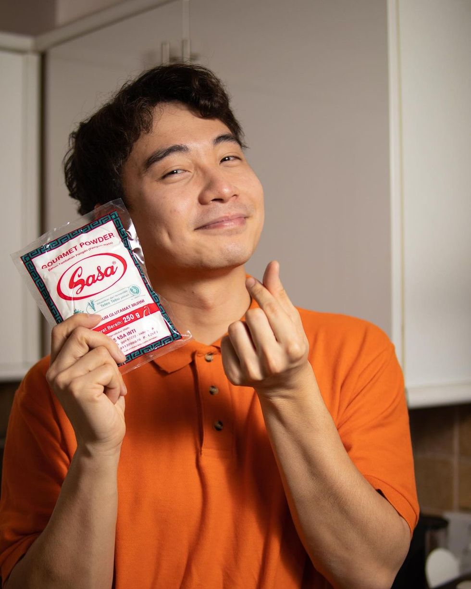

Uncle Roger's Fried Rice

Above: Uncle Roger and the glorious MSG.. Fuiyoh!
Description:
This Uncle Roger fried rice combines chicken flavored rice, a fried egg, and a crazy good stir fry-like sauce for an over-the-top flavor everyone will love. Plus, everything cooks in just one pan, taking under 30 minutes total!
Credit to I'm Hungry For That and Uncle Roger for this delectable dish
Ingredients:
- 2 tbsp peanut oil
- 5 garlic cloves, smashed
- 1 shallot, sliced from the middle
- 1 egg + 1 egg yolk
- 1 spring onion, sliced
- 1 red chili, sliced or chopped
- 4 cups chicken flavored rice, day old is best according to Uncle Roger
- ~2 tbsp soy sauce
- ~2 tbsp sesame oil
- ~1/2 tbsp MSG
ONLY 1/2 TABLESPOON MSG? HAIYAHH...
Steps
- Cook the chicken flavored rice according to the package.
- Whisk the egg and egg yolk in a bowl and set aside.
- Coat a wok pan with peanut oil and heat over medium. Once it starts smoking, throw the excess off.
- Add garlic and shallot. Fry it for 3 minutes.
- Add eggs and stir until it's almost solid.
- Add the cooked rice and mix it with everything.
- Add the soy sauce and sesame oil. Flatten it into the rice with the back of the spoon.
- Add the MSG, spring onion, and chili and mix everything in the wok to combine.